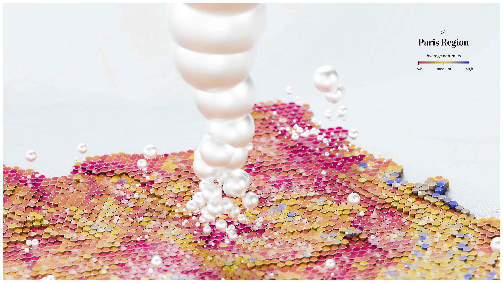
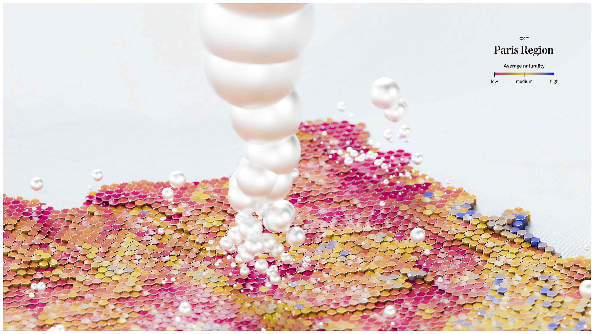

Visualization
![Hexagonal map of France colored in gradients from red and pink representing low naturality to blue representing high naturality, with white pearls scattered across regions. Title reads Does nature thrive without humans? at top left. Right side shows statistics including average naturality scale, average elevation, and total population. Bottom includes legend explaining biophysical integrity, evolution of natural processes, and age and connectivity of landscapes. The 3D visualization uses dimensional hexagons to represent terrain, conveying both geographic data and environmental conditions with an artistic, visually striking aesthetic.](images/naturality.webp) 

Source: Data to Art
Critique
After really looking at The Gradient of Naturality: France, I honestly don’t think it works very well as a data visualization. I personally love the aesthetic of it with the sequins, the pearls, the layered hexagons. It’s visually satisfying, and the different heights of the hexagons are interesting to look at. It absolutely grabs your attention. But once you move past the aesthetic, the way the data is translated into visual form makes it hard to extract meaningful information. There is a color gradient from red/pink (low naturality) to blue (high naturality), but that’s basically the only clear data cue. The visualization doesn’t communicate specific comparisons, numerical ranges, or strong takeaways. You can see that some areas are more red and some are more blue, but that’s where the clarity ends. From a Tufte perspective, this feels like “effects without causes.” We see dramatic color changes and dimensional variation, but we don’t clearly see what specific variables are driving those changes or how significant they actually are. The 3D hexagons make the visualization more confusing rather than clearer. They add texture and dimension, but they don’t clearly encode additional data in a measurable way. The height differences are not tied to clear numerical explanations. Instead of clarifying the relationship between elevation and naturality, the 3D aspect adds visual intensity without adding clarity. Tufte emphasizes maximizing informational density while minimizing unnecessary decoration. Here, the extra design increases complexity but not understanding. The floating pearls are even more confusing. They look intentional and beautiful, but it’s unclear what they represent. If they symbolize human presence or environmental pressure, that meaning is not visually obvious or supported with a strong legend. This risks what Tufte would call overreaching. The pearls suggest meaning, but the connection to measurable data is weak. There is also a subtle “rage to conclude” happening. The question, “Does nature thrive without humans?” pushes the viewer toward a philosophical conclusion before the data is clearly established. The color contrast implies imbalance, but the visualization doesn’t provide enough analytical detail to justify a strong conclusion. It creates a mood more than an argument. What is gained through this artistic approach is attention. The piece is extremely eye-catching and modern. It makes people stop and look because it doesn’t resemble a traditional environmental map. In that sense, it succeeds as art. However, what is lost is informational clarity. After looking at it, I don’t feel like I’ve gained concrete knowledge about France’s environmental conditions. I understand that some regions are more natural than others, but that insight feels very surface-level. Overall, The Gradient of Naturality: France functions much more effectively as art than as data. It raises awareness and creates visual impact, but it does not provide substantial, usable information. The aesthetic choices overpower clarity, resulting in a graphic that is beautiful and engaging but analytically weak.